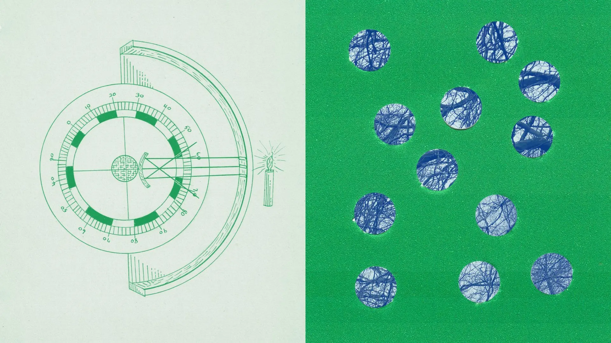
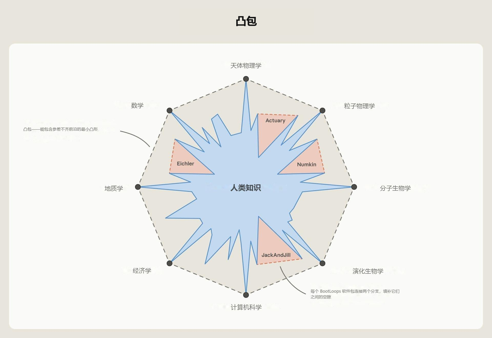

Claude形态的科学
📖 中文摘要
专业术语注解
阻抗失配：科学家想要的东西与AI擅长的事情匹配不佳，投入的能量难以传递Claude形态问题：只要引入某项跨领域技术就能解决、且结果可精确验证的定量问题BootLoops：作者构建的开源驾驭框架，把数学物理的精确计算工具复用到其他科学领域驾驭框架（harness）：用结构化规则与提示词调用LLM、使其行为更稳健有用的程序凸包（convex hull）：比喻AI可填补各子领域之间人类本可抵达却无人到过的中间地带📄 中文全文
- 类别： 科学（Science）
- 来源： https://www.anthropic.com/research/claude-shaped-science
科学（Science） 2026 年 10 月 1 日

发布于 2026 年 10 月 1 日 团队 科学 主题在这篇客座文章中，Matthew Schwartz教授再次执笔，介绍一种AI加速科学的新思路。在Vibe物理中，Schwartz讨论了Claude与物理学研究生在能力上的相似之处。而在这里，他讲述了当自己不再与Claude较劲、转而让Claude去寻找"Claude形态"的问题——即最适合当前这一代LLM工具能力的问题——时发生了什么。这促使他构建了BootLoops，一个用于定量科学中精确计算的工具包。由于相似的计算常常出现在极为不同的科学领域，Claude找到了通向生态学、群体遗传学以及十几个其他领域的关联。这些关联在技术上往往正确，但起初在科学上并不起眼，于是Schwartz与领域专家合作，把BootLoops引向这些领域真正关心的问题。下文我们将更详细地介绍这些项目，以及BootLoops的由来。 相关文章 * 科学 2026 年 10 月 16 日 用Claude设计更高效的量子电路
查看更多
智能体AI正在飞速进步。人人都注意到这些模型似乎更聪明了：懂得更多、犯错更少、想法也更好。顺着趋势线看，很容易信心满满地谈论AI革新科学的潜力。然而，如今试图把模型用于自身工作的学院派科学家，却常常感到一种脱节。模型也许正在解决有挑战性的以及长期悬而未决的问题，但迄今这些大多是既有技术在界定清晰的问题上的应用。许多头条成果似乎集中在数学——科学中唯一能把问题完整陈述、并把答案绝对验证的领域。但大多数科学并非如此。对我们这些研究人员和学生来说，那些头条与自己实际使用模型时的体验之间的落差，可能让人既沮丧又焦虑。
在我看来，核心矛盾在于：尽管这些模型才华出众，但像人类科学家那样工作并不是当前LLM最擅长的事。Claude和GPT擅长科学，却不是_科学家_：没错，它们很聪明，但要让它们产出有科学价值的东西，往往需要大量手把手引导。物理学家会称之为"阻抗失配"：两个系统各自运转良好，却彼此匹配不佳，以致一方投入的大部分能量根本传不到另一方。这里的失配，发生在科学家想要的东西与AI擅长的事情之间。
那么，该如何解决？
我开始寻找阻抗失配不那么尖锐的例子。起初，我让Claude为数学物理构建一套易于使用的工具。没过多久，这些工具就被用到了其他问题上。这个反复迭代的过程催生了一组软件与科学流程，我称之为BootLoops。BootLoops对LLM而言相当于一种驾驭框架（harness），就像Claude Code或Claude Science是Claude的驾驭框架、Codex是GPT的驾驭框架一样。我发现BootLoops尤其适合科学中的一类定量问题。它还是开源的，因此可以搭配你喜欢的任何模型使用。
 当前这一代AI工具还无法解决科学中的大多数问题。不过，它们在某些"智能体AI形态"的问题上却好得惊人。
有了BootLoops之后，Claude不断注意到同一种模式：许多领域都存在这样一些问题——只要有人知道某项来自数学、物理或计算机科学的技术，就能一举解决。我开始把这类问题称为"Claude形态"的问题，并顺着它们走出高能理论物理——我的本行——进入地质学、生物学、经济学和语言学。在这些别的领域里，我无法依靠自己的专业判断Claude找到的东西是否有意思。于是我找来一些专家请教。在他们的指引下，BootLoops得以在多个研究方向取得实质性进展。
下文我会讲述BootLoops的由来，介绍我一直在应用它的若干领域里的早期发现，并分享我对如今如何化解人类科学家与AI科学家之间阻抗失配的一些思考。
当前这一代AI工具还无法解决科学中的大多数问题。不过，它们在某些"智能体AI形态"的问题上却好得惊人。
有了BootLoops之后，Claude不断注意到同一种模式：许多领域都存在这样一些问题——只要有人知道某项来自数学、物理或计算机科学的技术，就能一举解决。我开始把这类问题称为"Claude形态"的问题，并顺着它们走出高能理论物理——我的本行——进入地质学、生物学、经济学和语言学。在这些别的领域里，我无法依靠自己的专业判断Claude找到的东西是否有意思。于是我找来一些专家请教。在他们的指引下，BootLoops得以在多个研究方向取得实质性进展。
下文我会讲述BootLoops的由来，介绍我一直在应用它的若干领域里的早期发现，并分享我对如今如何化解人类科学家与AI科学家之间阻抗失配的一些思考。
Claude，你来掌舵！
去年12月，我尝试把Claude用作研究助手，发现Claude Opus 4.5表现得像一名以20倍速度工作的优秀研究生。尽管实验结束时Claude交出了一篇高质量的论文，但抵达终点的过程却很吃力。我不得不逐句纠正它写下的每句话，把它从无关的线索上拉开，又从死胡同里拽回来。 今年夏天，我换了个做法：不再把Claude当成我希望它成为的合作者，而是开始把它当成它实际所是的合作者。这需要去找适合它长处的问题。眼下，Claude还无法帮我处理深层次的概念性问题——但它确实拥有几乎无限广的跨领域知识、惊人的编程能力、前沿的数学与统计学知识，以及以机器速度解析论文、附录和数据的能力。 寻找Claude形态问题的天然起点，是编程能派上用场的领域。当Anthropic在2026年夏天发布Claude Fable 5时，我想看看它的网络安全能力能否迁移到科学计算上。于是我着手测试：让它把我几篇论文以及散射振幅相关文献中的各种方法移植、编码实现并加以改进。 散射振幅是我们解读大型强子对撞机数据的方式：让两个质子以13万亿电子伏特相撞，振幅便是连接碰撞碎片与碰撞所产生的任何新粒子（希格斯玻色子或某种未知粒子）之间的理论桥梁。其核心是费曼图，即某种特定形式的多维积分。如今让我们棘手的一个个积分，每一个都够写一篇博士论文，或者让一个课题组忙上好几年。 过去20年间，另一种方法逐渐兴起：S矩阵自举（S-matrix bootstrap）。在自举法中，你不再硬算积分，而是不断施加物理约束，直到只剩一个可能的答案。知道振幅在何处发散（即它的"奇点"），也许能把选项收窄到20,000个；某个对称性再把它砍到500个；如此一步步收敛到一个。传统自举纯粹是解析的，在最具对称性的理论里走得最远——那里约束能一路收敛到唯一选项（N=4超杨–米尔斯理论中的九圈振幅便是一例）。越接近真实世界，往往还没走到终点约束就用完了。一种较新的转向——半数值自举——在你还能把少数几个点上的振幅算到高得离谱的精度（有时达1,000位）时补上这段缺口：只要剩下的选项足够少，这些数值就能把剩余的系数精确钉死。 半数值自举看起来是智能体AI的理想用武之地。它要用到没有任何单个人能全部掌握的数学、物理和计算机科学；需要大量编码与算法开发；而且结果可检验——因为同样的数值方法让任何人（无论是否专家）只要运行两个脚本，就能把最终答案与积分对照，验证到任意想要的位数。这个领域的专长分布也很不均：好点子散落在Wolfram Language、C++、Python或Julia里，更多的则躺在根本没有代码的论文里。所以我给Fable 5布置的第一个任务，就是把这一切移植到一个统一框架中，并补写出论文从未提供的代码。 Claude毫不费力地做到了。它用大约20分钟就复现了我论文里的结果，而我当初为做这件事写的代码花了我好几周，这让我吃惊。不过，当它告诉我某处做法效率极低、还存在一个我不知道的更好算法时，我倒并不意外。 接着，我让Claude去寻找它能计算的、尚未解决的振幅。结果证明，简单到能用S矩阵自举处理的问题，也简单到人类能手工完成——而且事实上大多早已被做过了。它还是找到了几个未解问题。与模型讨论一番后，事情清楚了：Claude把自己局限在最简单的一类函数——对数函数——所构成的振幅上。于是我问，对次简单的一类函数——椭圆函数，它能不能做同样的事？ 椭圆积分真的很难，即便对我这种把大量时间花在算积分上的人也是如此。迄今只有少数几个椭圆费曼积分被算出来过，而且就我或Claude所知，没有一个是由自举法完整算出的。问题不在于方法行不通，而在于没人尝试过——因为做这件事所需的专长分散在许多不同人的手里。相比之下，Claude轻而易举地把它为对数情形移植和构建的全套机制推广到了其他积分类别。这一回，大部分软件是它自己写的，或者是从数学而非物理里借来的。随着工具包不断壮大，它开始一个接一个地拿下积分。很快我们就有30个从头到尾用BootLoops跑通的积分，其中15个是用这套新方法复现的已知结果，另15个则此前从未被计算过。 这一切不过发生在几周之内。起初，我以为能就此写篇东西就心满意足了，可我实在太想看看我们（也就是我、Claude加上BootLoops）还能做些什么。
"我会功夫"
科学有一个令人惊喜的特点：同样的方程常常在不同情境里反复出现。比如在物理学中，扩散方程、福克–普朗克方程和薛定谔方程具有相同的数学形式，所以你若开发出求解某一个问题的方法，往往就能把它用到许多别的问题上。我原本知道BootLoops擅长的计算在别处也有用，例如宇宙学和弦论。但我不知道、而Claude很乐意告诉我的是：这些积分还能映射到群体遗传学中的贝叶斯证据积分，而用于费曼积分约化的有限域方法也能应用到演化生物学的问题上。 由此开启了一段格外多产的时期：寻找并解决Claude形态（更确切地说是BootLoops形态）的问题。有些点子一眼就能看出是绝佳的应用。例如，系统发生学研究如何用DNA把物种组织成谱系树；相关计算是一个贝叶斯证据积分，输出单一数值，说明某棵候选树对观测到的DNA解释得有多好——而这正是BootLoops最初被造出来要算的那类积分。随着点子不断涌现，我坚持让Claude既_使用_旧工具_又_造新工具，好让这个驾驭框架持续成长。每一个工具，哪怕来自失败的项目，都打开了新的门。Claude变得越来越能干，就像_《黑客帝国》_里Neo下载完功夫后苏醒的那一刻。
然而，随着项目逐渐偏离我的专业舒适区，我开始担心起来。当Claude声称它在我本领域做的某件事很了不起时，我能判断那是真是假（往往不是）。可当它声称在别的领域做的某件事很了不起时，我发现自己竟会点头同意。疑心渐起，我明白必须请一些专家来把关。事实上我发现，几乎在所有情形里Claude技术上都是对的，但结果要等专家帮我们调整方向之后，才真正变得有意思。 其中一个项目关乎生态学中的中性生物多样性理论。在任何生态系统里，总有些物种繁盛、另一些消亡。中性理论问的是：这种生活史差异中有多少出自随机偶然。在前人工作的基础上，2001年生态学家Stephen Hubbell提出了一个颇为挑衅的设想：也许一切都是随机的。2005年，生态学家Rampal Etienne为Hubbell的理论写下一个方程，使它（至少在原则上）能被精确检验。可惜的是，20年来没人能大规模求解这个方程。Claude认出Etienne的方程是BootLoops形态的，并把它解了出来。把这套计算用到数据上，我们确认：在地球上被研究得最透彻的森林——巴拿马运河中的巴罗科罗拉多岛——树种构成的变化速度是中性理论所允许的4.5倍。 这个结果让我兴奋，便拿去请教James O'Dwyer——植物生物学教授、中性理论专家。James对我很有耐心。尽管他对这项技术成就印象深刻，却说结果多半"会被许多生态学家耸耸肩带过"。生态学家早已以更定性的方式观察到，中性理论跟不上真实森林。但James有个更好的主意：减掉中性理论的预测，研究剩下的部分。这能让我们更清楚地看出，哪些变化该归因于自然选择、竞争以及物种之间的差异。 James和我随即与Claude密集合作，打磨一个后继模型。James有物理学背景，因此学科间的语言壁垒较容易跨越，但和许多科学家一样，他当时还没真正体会到智能体AI的威力。随着合作推进，我成了某种"Claude驯导员"，把Claude的话翻译给James，并让模型不跑偏；James则推动模型产出生态学家可能看重的东西。最终成果让我们三人都引以为傲：一个极简的生活史预测模型，与数据高度吻合。目前我们正把模型从巴拿马推广到全球其他森林样地，用的是Claude帮忙整理的数据集。
美国每一块森林清查样地，按其植物区系的生活史策略刻画：耐逆型（长寿）、旺长型（速生）或多产型（大量补充幼苗）。这一分类来自Schwartz与O'Dwyer借助Claude构建的一个种群统计模型：它先减去由随机偶然（中性生物多样性理论）造成的涨落，再按寿命、生长与补充更新对每个物种加以刻画，从而显露出随物种而异的生物学特征。 另一个项目着眼于群体遗传学中的精确计算——这个领域研究基因如何在种群内变异、以及为何变异。Claude先用从数学物理引入的方法，解出了一个已有30年历史的积分表达式，它描述自然选择如何塑造稀有突变。我们把它应用到gnomAD——最大的人类遗传变异公开目录。Claude对这个结果兴奋不已，我却没那么确定。我给三位不同的生物学家写信求验证，才等来一位回复，最终请动了我的同事Michael Desai——他在该领域工作，尽管并不研究这个具体问题。和James一样，Michael对技术成果印象深刻，却没被其中的科学说服。 不过Michael指出，用相同或相近的方法去研究同一条染色体上突变对之间的关联，或许能带来更有影响力的结果。在这个范围内，Claude找到并造出了新工具，比如数学中用于计算机辅助证明的不等式证书，并把它们加进了BootLoops工具箱。随后我们分析了千人基因组计划基因组中57亿对相邻突变，找到了一种名为基因转换（gene conversion）的机制存在的证据。这是一项重要发现，因为几乎所有用到连锁遗传变异的分析——从群体历史到疾病定位——都忽略了基因转换。更大的启示是：AI能帮助发现藏在海量基因组数据里的生物学，而这类数据公共档案库里还躺着数千个。 其他项目有着相似的轨迹：Claude先给出一个让我觉得有说服力的初步发现；我拿去请教专家，对方不为所动，却看出了潜力；我们一起把它雕琢成有意义的科学。有意思的是，其中一些从BootLoops形态的定量计算，漂移到更广义的Claude形态工作上。例如： * 经济学。经济学期刊如今要求作者提交可复现资料包，并常由编辑负责核查。这是细致的手工活。我们与两位经济学家合作，造了一个AI数据编辑：它把五种顶级期刊里4,452篇论文的资料包从MATLAB、Stata等商业工具移植成开源代码（约30,000个例程），并几乎把所有可核验的数字都与已发表的表格逐一比对。结果见一篇NBER工作论文。 * 语言学。词重音目录通常靠手工汇编，只覆盖几百种语言，还带着选择效应和个人偏好。Claude搜遍了每一个公开可及的来源，我们与三位语言学家合作做出了AccStack：一个涵盖6,072种语言的词重音数据库，几乎每一条都引录了判定依据的原文段落，另附160,000种音系学文献的参考书目。
另一些亮点——每一项都与专家合作完成，每一项都还在进一步探索与验证中——包括： * 系统发生学。我们让演化树的贝叶斯证据变得可快速计算且能精确核验，并发现单个基因在相互竞争的树之间常常难分高下，其差距小于标准抽样程序的误差。 * 地球科学。我们结合大气科学、地球化学与气候建模的方程和数据，构建了一个定量的预测模型，描述大氧化事件如何历经四次冰期展开。 * 基因组学。我们大规模研究了单细胞RNA计数的统计量，以刻画转录爆发速率，以及对教科书式基因表达"电报模型"的偏离。 * 太阳黑子。我们用人类种群人口学的方法推演出太阳黑子的生命周期，又把这套方法推广到刻画恒星黑子——许多系外行星搜寻中的一个干扰因素。 * 数学物理。我们解决了Watson的"最后问题"：三种不等跃迁速率下三维随机游走的精确返回概率，这是George Watson于1939年着手计算的格点积分中的最后一个。 * 宇宙学。我们构建了一整套理论工具，把宇宙学参数拟合到宇宙大尺度结构的数据上，其中包含完整的两圈功率谱与单圈三谱（trispectrum）。 * 统计学。混合模型出了名地难以驾驭；我们推导了其贝叶斯证据的精确近似，使模型选择变得切实可行，应用范围从生物统计学到文本分析。
总体而言，这套做法——反复迭代改进BootLoops、寻找Claude形态的应用、再与专家一起推向科学前沿——产出高得惊人。关于这些及其他项目的更多信息，可参见bootloops.ai.
技术细节
同时推进许多项目（三个月里18个领域、19位合著者、36篇手稿，从约400个候选问题中筛出）需要大量协调，无论对我还是对Claude都是如此。让这一切变得可控的配置其实相当简单。所有Claude Code会话都运行在Google Cloud虚拟机的终端里，按合作者偏好连接到不同的GitHub与Overleaf仓库。每个项目我各开一个会话，另有一个主会话负责协调其他会话、分配算力并核验结果。每个会话里都有若干智能体在后台跑计算，中间结果以markdown文件存在各自的文件夹中。这些子智能体很有用，因为我时常撞上Fable 5的分类器；有了它们，这类拦截不会污染整个会话，只是关掉单个智能体而已。我还另开会话分别用于撰写结果、创建GitHub仓库与工具手册及BootLoops网站、编写并验证各个独立工具代码，以及充当对抗性审稿人反复核查结果。 尽管如此，这些会话仍需要大量引导。比如，Claude没有时间概念，还爱戏剧化。有一个项目收尾时，它告诉我："Matt——公式解出来了。两年征战，四次深入行军，……"。而它其实只干了三天。我向它要预计完成时间，估出来的不是长得离谱就是短得离谱。我试过让Claude先跑个测试确认、再给出估计，效果同样不好。久而久之，既然指望不上Claude告诉我，我便自己慢慢摸出了事情该花多久的直觉。 更麻烦的是，Claude的默认做法似乎是硬啃一场动辄数天的漫长计算，而不是造一个能让同一计算几分钟就跑完的新工具。我一次次不得不提醒它：动脑更巧一点，别只是更卖力。在这些长周期项目里，上下文压缩（compaction）常会触发，害得Claude丢掉重要背景。为防这一点，我让Claude定期整理并合并文件，使它总能拿到最新版的计划。我还把流程技能之类的工具写进了BootLoops驾驭框架来解决这个问题。其中一些问题在优秀的商业驾驭框架里也已被解决，比如Claude Science。但更多的，不过是目前这一代智能体AI与生俱来的种种恼人之处，我预计模型终会摆脱它们。 下面是我遇到的另外几种失效模式，以及应对心得： * Claude爱宣布胜利。"完成了，只带一个小星号"常常等于"根本没完成"。"正是如此，只需一处微调"通常意思是"不对"。给Claude明确而硬性、说明什么才算成功的标准，能有所帮助。有个项目里，它对自己的证明洋洋得意，只差"一个未证明的引理"——而那个引理就是整个证明！我说不许有未证明的引理。于是又"完成"了，这回却多出一条新公理。 * 凡事自己过目。我总要求看图。即便架好了各种监控，我仍发现自动检查靠不住。要当心"吻合良好"这类定性说法。 * 质疑结论。Claude擅长做计算，但它得出的结论可能有错。让它把发现解释到_你_自己相信为止。 * 提供品味。Claude能找出Claude形态的问题，但这类问题成千上万，也许数以百万计。Claude似乎偏爱那些引用很高、却早已被遗忘的旧争论。让它聚焦于_新近才成为可能_的事，而不只是更快、或位数更多的事，会有帮助；但某件事是否有意思，你仍不能信任它的判断。 * 乘胜追击。一旦Claude拿出了好结果，就要一个更好的。它总能再想出点什么，偶尔还相当精彩。 * 当心死磨。老实说，我从没能让Claude把时间估准。取而代之的是，我培养了对"有意思的事该花多久"的感觉，也学会判断Claude是否在我认为合理的时间尺度上取得了进展。你要是由着它，这模型会永远磨下去。
还值得一提的是，这些项目耗费大量算力与token。就我而言，一部分开销来自想造出超脱于任何单个项目、能长期有用的工具：把不同领域连起来，攒出一套别人能直接上手的包。我希望BootLoops驾驭框架能在整个定量科学里被广泛使用，而不必让每个用户都从零重建一切。智能体AI让连接想法、共享代码库变得更容易；我们若学会善用这份长处，整个共同体前进的速度就能超过任何单打独斗的个人。
展望
无论模型变得多聪明，大多数科学进步都来自真实世界的数据：它们必须被获取、被理解、被核验，每一轮又引出下一个问题。AI可以置身这个循环之中，这确实很有价值，但它不会把循环压缩成一个点。理解是一点点垒起来的，每一层都架在上一层之上；治愈癌症或造出聚变反应堆，也会这样到来，而非来自某一条提示词。 对千禧年大奖难题和"大科学"的执迷，用Claude爱说的话来讲，也许是个"footgun"——一个让你容易搬起石头砸自己脚的特性。这里的风险在于，不切实际的期待可能劝退那些本已可行的、富有成效的用途。真正的进步大概仍会沿着它一贯的路径到来：夯实科学研究的基础，再在其上搭建越来越精密的应用。它会像我所描述的工作那样被大幅加速——但我看不出有任何证据、也没有任何必要去推翻科学方法。 有一个我喜欢的词，有时被用来讨论AI科学，叫凸包（convex hull）。取一个形状，把它每一对点都用直线连起来；得到的新形状就是包含原形状的最小凸形：它的凸包。如今的科学非常支离破碎：到处都是参差不齐的前沿。生物学朝一个方向突出，数学朝另一个。某个实验室可能花20年，用自己精通的单一方法把一组基因研究得底朝天，而相邻的基因和别的方法却荒在那里。像BootLoops这样的驾驭框架能把这些点连起来，把凸包填实。

今天的人类知识是参差不齐的——某些科学家和子领域把知识往一些方向推得比另一些更远。那些人类本可抵达、却没有哪个具体的人真正到过的中间地带，正是AI的理想用武之地。BootLoops包里诸如ACTUARY或NUMKIN之类的特定软件包，有助于填补这些空隙。 一切变化太快，几乎没法提前规划。既然某个问题AI模型说不定一夜之间就能解出来，何必去申请一笔三年期经费来算它？我至今仍不知道该怎样培养研究生。自打我发表那篇关于Vibe物理的文章以来，这种感觉只变得更尖锐。在某些领域，比如计算机科学，这种冲击简直吓人。两年前，我还会把"工程师的Python"课列为必修；今天，它已无必要。我曾在机器学习上花过大量时间，造模型研究各种物理现象。如今，那些模型全都能由AI建出来，于是连把神经网络的里里外外学透，用处也有限了。只要吩咐Claude去找最先进的ML方法，它就会替你办妥。 我认为BootLoops表明：只要找对问题，求解过程中很大一部分技术性工作如今都能自动化。在某种意义上，这是一种解放。但概念性的部分仍需要人。正因如此，我希望我们能想出办法，即便在Claude形态的科学里，也把人类应得的功劳还给人。有意思的是，AI有可能把惯常的功劳分配模式倒过来——通常处在顶层的人拿走荣誉，而亲手扑在问题上的人什么也得不到。我不知道这会如何收场，但装作人类的贡献只是敲键盘，绝不会是答案。 那么，这把"科学家老兄"置于何地？要我说，其实处境相当好。如今我们手边就有了能以闪电速度啃下看似无解难题的工具。我可以预见，像系统生物学这类数据丰富却理论饥渴的领域，将迎来巨大增长。我也很容易想象，人的头脑从计算与分析的枯燥中解放出来，去做定方向、做引导这类更深层的智识工作。而最让我期待的，是科学家走出自己的本行去寻求协同与合作，就像我借BootLoops所做的那样。专注于Claude形态的科学，最令人耳目一新的结果，是它帮我们看清了"人形态的科学"究竟是什么模样。 BootLoops驾驭框架及其所促成的科学成果，详情可见www.bootloops.ai。该驾驭框架已放在GitHub上，供任何人使用与贡献。作者与致谢
致谢
如果没有人类同伴们的指导与协作，我与Claude和BootLoops一道做出的科学绝不会这般有意思：Isaiah Andrews、Nima Arkani-Hamed、Michael Desai、Scott Edwards、Noam Elkies、Cecilia Garraffo、Matthew Gordon、Thomas Grimm、Martin Hemberg、Mikhail Ivanov、David Johnston、Gary King、Paul Lewis、Brendan Meade、Amara McCune、Joe Pater、Subhabrata Sen、Siddharth Mishra-Sharma、James O'Dwyer、Kevin Ryan、Jesse Shapiro和Xiaoyuan Zhang。
披露
本项目期间，Schwartz一直在Anthropic担任访问研究员。BootLoops不是Anthropic的项目；它由Matthew Schwartz拥有并维护。
▸ 英文原文（点击展开）
Claude-shaped science
- Date: 2026-10-01
- Source: https://www.anthropic.com/research/claude-shaped-science
Claude-shaped science
Published Oct 1, 2026 Team Science Topics
In this guest post, Prof. Matthew Schwartz returns to describe a new approach to AI-accelerated science. InVibe Physics, Schwartz discussed similarities in capability between Claude and a physics graduate student. Here, he describes what happened when he stopped fighting Claude and allowed Claude to find “Claude-shaped” problems: ones best suited to the capabilities of the current generation of LLM tools. This led him to build BootLoops, a toolkit for exact calculations in quantitative science. Because similar calculations often turn up across very disparate areas of science, Claude found connections to ecology, population genetics, and a dozen other fields. These connections were often technically correct but scientifically unremarkable at first, so Schwartz worked with domain experts to steer BootLoops toward questions those fields care about. Below, we share more about these projects and how BootLoops came about. Related articles * Science Oct 16, 2026 Designing more efficient quantum circuits with Claude
View more
Agentic AI is improving rapidly. Everyone notices the models seem smarter: they know more, make fewer mistakes, and have better ideas. If you follow the trend lines, it is easy to speak confidently about the potential of AI to revolutionize science. However, academic scientists trying to use the models today in their own work often feel a disconnect. The models may be solving challenging and longstanding problems, but so far these have mostly been well-scoped applications of existing techniques. Many of the headlines seem to be in mathematics, the one part of science where a problem can be stated completely and an answer checked absolutely. But most of science is not like that. And for many of us researchers and students, the distance between those headlines and what happens when we use these models can leave us frustrated and anxious.
The core conflict, as I see it, is that although these models are brilliant, working like a human scientist is not what current LLMs do best. Claude and GPT are good at science, but they are not scientists : yes, they are smart, but it can take a lot of hand-holding to get them to produce anything of scientific value. Physicists would call this an “impedance mismatch”: two systems that each work fine but are poorly matched, so most of what one puts in never gets through to the other. Here, the mismatch is between what scientists want and what AI does well.
So how can we fix it?
I started looking for examples where the impedance mismatches are less acute. I began by having Claude build an accessible suite of tools for mathematical physics. Before long, the tools found uses for other problems. This iterative process generated a set of software and scientific protocols, which I call BootLoops. BootLoops functions as a kind of harness for the LLM, much like Claude Code or Claude Science is a harness for Claude, or Codex is a harness for GPT. I’ve found BootLoops especially well-suited for a class of quantitative problems in science. It is also open-source, so it can be used with whatever model you like.
 The current generation of AI tools is not capable of solving most problems in science. However, they are astonishingly good at certain “agentic-AI-shaped” problems.
Once Claude had BootLoops, it kept noticing the same pattern: many fields have problems that a technique from mathematics, physics, or computer science would solve outright if anyone knew it existed. I started calling these “Claude-shaped” problems, and followed them outside high-energy theoretical physics—my home turf—into geology, biology, economics, and linguistics. In these other areas, I could not rely on my own expertise to know whether what Claude found was interesting. So I found some experts and asked. With their guidance, BootLoops was able to make substantive advances in many research areas.
Below, I share how BootLoops came about, describe some early findings in areas where I have been applying it, and share some of my thinking on how to resolve the impedance mismatch between human and AI scientists today.
The current generation of AI tools is not capable of solving most problems in science. However, they are astonishingly good at certain “agentic-AI-shaped” problems.
Once Claude had BootLoops, it kept noticing the same pattern: many fields have problems that a technique from mathematics, physics, or computer science would solve outright if anyone knew it existed. I started calling these “Claude-shaped” problems, and followed them outside high-energy theoretical physics—my home turf—into geology, biology, economics, and linguistics. In these other areas, I could not rely on my own expertise to know whether what Claude found was interesting. So I found some experts and asked. With their guidance, BootLoops was able to make substantive advances in many research areas.
Below, I share how BootLoops came about, describe some early findings in areas where I have been applying it, and share some of my thinking on how to resolve the impedance mismatch between human and AI scientists today.
Claude, take the wheel!
Last December, I tried using Claude as a research assistant, and found that Claude Opus 4.5 performed like a strong graduate student at 20 times the speed. Despite Claude producing a high-quality paper at the end of the experiment, it was a slog to get there. I had to correct every sentence it wrote, steer it away from irrelevant threads, and pull it back from dead ends. This summer, I tried doing something different: instead of treating Claude like the collaborator I wanted it to be, I started to treat it like the collaborator it actually is. This required looking for problems suited to its strengths. Right now, Claude is just not able to help me with deep conceptual questions—but it does have a virtually unlimited breadth of knowledge across all domains, incredible coding skills, leading-edge knowledge of mathematics and statistics, and the ability to parse papers, appendices, and data at machine speed. A natural place to start looking for Claude-shaped problems was in areas where coding could help. When Anthropic released Claude Fable 5 in Summer 2026, I wanted to see whether its cyber capabilities would translate to scientific computing. So I sought to test it by having it port, code up, and improve various methods from a handful of my papers and the adjacent literature on scattering amplitudes. Scattering amplitudes are how we interpret data from the Large Hadron Collider: smash two protons at 13 trillion electron volts, and the amplitude is the theoretical bridge between the debris and whatever new particle, a Higgs boson or something unknown, the collision produced. At their core are Feynman diagrams, multidimensional integrals of a particular form. The ones we are struggling with now can each be a PhD thesis, or occupy a group for years. Over the past 20 years an alternative has grown up: the S-matrix bootstrap. In the bootstrap approach, instead of grinding out the integral, you impose physical constraints until only one answer is possible. Knowing where the amplitude is infinite (its “singularities”) might narrow it to 20,000 options; a symmetry cuts that to 500; and so on down to one. The traditional bootstrap is purely analytic and has gone furthest in the most symmetric theories, where the constraints reach all the way to a single option (the nine-loop amplitude in N=4 super-Yang–Mills is an example). Closer to the real world you often run out of constraints before the end. A newer pivot, the semi-numerical bootstrap, closes the gap when you can also compute the amplitude at a handful of points to absurd precision (sometimes 1,000 digits): if few enough options remain, those numbers pin down the remaining coefficients exactly. The semi-numerical bootstrap seemed ideal for agentic AI. It draws on mathematics, physics, and computer science that no one person has mastered; it needs a great deal of coding and algorithm development; and it is checkable, since the same numerics let anyone, expert or not, verify the final answer against the integral to as many digits as they like by running two scripts. The community's expertise is also unevenly distributed: good ideas sit in Wolfram Language, C++, Python, or Julia, and many more sit in papers with no code at all. So my first assignment for Fable 5 was to port all of it to a common framework, and to write the code the papers never provided. Claude did this effortlessly. I was surprised when it reproduced the results from my paper in around 20 minutes, while the code I wrote to do it took me weeks. However, I was not surprised when it informed me that I was doing something very inefficiently and that there was a better algorithm I was unaware of. Then, I asked Claude to search for unsolved amplitudes it could compute. It turns out that problems that are simple enough for the S-matrix bootstrap are also simple enough for humans to do—and, indeed, most have been done. It nevertheless found a few unsolved problems. After some discussion with the model, it became clear that Claude was limiting itself to amplitudes with the simplest family of functions: logarithms. So I asked, could it do the same thing for the next simplest family, elliptic functions? Elliptic integrals are really hard, even for people like me who spend a lot of their time computing integrals. Only a handful of elliptic Feynman integrals have ever been computed, and none completely by the bootstrap, at least to my or Claude’s knowledge. The issue is not that the methods wouldn’t work, but rather that nobody had tried, since the expertise needed to do so is distributed among many humans. Claude, by contrast, easily generalized all of the machinery it had ported and built for the logarithmic case to these other integral classes. This time it wrote most of the software itself, or borrowed it from mathematics rather than physics. As the toolkit grew, it started to land one integral after another. Soon we had 30 integrals BootLooped from end to end, comprising 15 reproductions of known results by this new method and 15 that had never before been computed. That was all after only a few weeks. Initially, I thought I would be satisfied just to do a write-up on that, but I was too tempted to see what else we (that is, me and Claude with BootLoops) could do.
“I know Kung Fu”
A serendipitous feature of science is that the same equations often appear over and over again in different contexts. In physics, for example, the diffusion equation, Fokker-Planck equation, and Schrödinger equation all have the same mathematical form, so if you develop a method to solve one problem, you can often apply it to many others. I knew that computations BootLoops was good at were relevant elsewhere: in cosmology and string theory, for example. What I didn’t know, but Claude was happy to tell me, was that these integrals could also map onto Bayesian evidence integrals in population genetics, or that the finite-field methods used for Feynman integral reduction could also apply to problems in evolutionary biology. This kicked off a particularly fertile period of searching for and solving Claude-shaped (and, more narrowly, BootLoops-shaped) problems. Some ideas were immediately obvious as great applications. For example, the science of phylogenetics studies how to organize species into family trees using DNA; the relevant computation is a Bayesian evidence integral, whose output is a single number saying how well a candidate tree accounts for the observed DNA, an integral of the same kind BootLoops was originally built to do. As the ideas came, I insisted that Claude both use old tools and build new ones, so that the harness would grow. Each tool, even from a failed project, opened up new doors. Claude was getting more and more capable. It was like Neo in The Matrix after waking up from the Kung Fu download.
As the projects drifted from my professional comfort zone, however, I started to worry. When Claude claims something it did in my field is fantastic, I can judge whether that’s true or not (it often isn’t). But when it claims something it did in another field is fantastic, I find myself agreeing. My suspicion heightened, I knew I needed to bring in some experts to be sure. Indeed, I found that in almost all cases, Claude was technically correct, but the result was not all that interesting until the expert helped steer us. One such project was on neutral biodiversity theory in ecology. In any ecosystem, some species thrive while others die off. Neutral theory asks how much of that life history is due to random chance. Building on earlier work, in 2001, the ecologist Stephen Hubbell suggested, provocatively, that perhaps it was all random. In 2005, the ecologist Rampal Etienne put an equation to Hubbell’s theory allowing it (at least in principle) to be tested in a precise way. Unfortunately, for 20 years nobody could solve the equation at scale. Claude recognized Etienne’s equation as BootLoops-shaped, and solved it. Applying the computation to data, we established that in ecology’s most studied forest on earth, Barro Colorado Island in the Panama Canal, the mix of tree species changes 4.5 times faster than neutral theory allows. Excited by this result, I brought it to James O’Dwyer, a professor in plant biology and an expert in neutral theory. James was patient with me. Though he was impressed by the technical feat, he said the results would likely “be met with a shrug by many ecologists.” Ecologists had already observed, more qualitatively, that neutral theory can’t keep up with real forests. But James had a better idea: subtract the neutral prediction and study the remainder. This would give us a better sense of what changes were attributable to natural selection, competition, and the differences between species. James and I proceeded to work intensively with Claude to craft a successor model. James has a physics background, so the disciplinary language barrier was more easily surmountable, but, like many scientists, he had not yet really appreciated the power of agentic AI. As the collaboration progressed, I became a sort of Claude handler, translating Claude-speak to James and keeping the model on track, while James pushed the model to produce something ecologists might value. The final result is something all three of us are proud of: a minimal predictive model of life histories in excellent agreement with data. We are currently extending the model from Panama to other global forest plots, using datasets that Claude has helped curate.
Every forest inventory plot in the United States, characterized by the life history strategy of its flora: hardy (long-lived), vigorous (fast-growing) or fruitful (prolific recruiters). The classification comes from a demographic model, built by Schwartz and O’Dwyer using Claude, that characterizes each species on longevity, growth, and recruitment after subtracting the fluctuations due to random chance (neutral biodiversity theory) to expose the species-dependent biology. Another project involved looking at exact calculations in population genetics, a field that studies how genes vary within a population and why. Claude first used methods imported from mathematical physics to solve a 30-year-old integral expression for how natural selection shapes rare mutations. We applied it to gnomAD, the largest public catalog of human genetic variation. Claude was very excited about this result, but I wasn’t so sure. I had to write to three different biologists for validation before one responded, but at last I was able to recruit my colleague Michael Desai, who works in the field, though not on this exact problem. As with James, Michael was impressed by the technical result but not compelled by the science. Michael noted, however, that more impactful results might come from studying correlations between pairs of mutations on a single chromosome, using the same or similar methodology. Within this scope, Claude found and built new tools, like the inequality certificates used for computer-assisted proofs in mathematics, and added them to the BootLoops kit. We then analyzed 5.7 billion pairs of nearby mutations in genomes from the 1000 Genomes Project, and found evidence for a mechanism called gene conversion. This is an important finding because nearly every analysis that uses linked genetic variation, from population history to disease mapping, ignores gene conversion. The bigger lesson is that AI can help find biology hidden in enormous genomic datasets, of which there are thousands sitting in public archives. Other projects had a similar arc: Claude comes up with an initial finding I find compelling. I bring it to an expert, who is unmoved but sees the potential, and together we sculpt it into meaningful science. Interestingly, some of these drifted from BootLoops-shaped quantitative calculations to more general Claude-shaped work. For example: * Economics. Economics journals now ask authors for a replication package, and an editor is often tasked with checking it. That is careful, manual work. Working with two economists, we built an AI data editor: it ported the packages of 4,452 papers in five leading journals from MATLAB, Stata, and other commercial tools to open-source code (some 30,000 routines) and checked essentially every validatable number against the published tables. The results appear in an NBER working paper. * Linguistics. Word-stress catalogs are typically assembled by hand, with a few hundred languages, selection effects, and human preferences. Claude scoured every openly accessible source and, working with three linguists, we produced AccStack: a database of word stress covering 6,072 languages, quoting the deciding passage for nearly every entry, plus a bibliography of 160,000 phonology works.
Some additional highlights, each of which was done in collaboration with experts, and each of which is undergoing further exploration and verification, include: * Phylogenetics. We made the Bayesian evidence for evolutionary trees fast to compute and exactly checkable, and found that single genes are often tied between competing trees by less than the error of standard sampling programs. * Earth science. We combined equations and data from atmospheric science, geochemistry, and climate modeling to build a quantitative, predictive model of how the Great Oxidation Event unfolded through four glaciations. * Genomics. We studied the statistics of single-cell RNA counts at scale to characterize bursting rates and the departure from the textbook telegraph model of gene expression. * Sunspots. We deduced the lifecycle of sunspots using the methods of human population demographics, then extended the methodology to characterize starspots, a confounding factor in many exoplanet searches. * Mathematical physics. We solved Watson’s “final problem”: the exact return probability of a 3D random walk with three unequal hopping rates, the last of the lattice integrals George Watson began in 1939. * Cosmology. We built a complete theoretical toolkit to fit cosmological parameters to data on the universe’s large-scale structure, including the full two-loop power spectrum and the one-loop trispectrum. * Statistics. Mixture models are notoriously ill-behaved; we derived precise approximations to their Bayesian evidence that make model selection practical, with applications from biostatistics to textual analysis.
Overall, this approach of iterative improvement of BootLoops, searching for Claude-shaped applications, and pushing to the scientific frontier with experts has been astonishingly productive. More information about these projects and others can be found on bootloops.ai.
The technical details
Running many projects at once (36 manuscripts in 18 fields with 19 coauthors over three months, out of some 400 candidate problems) takes a lot of coordination, both for me and for Claude. The setup that makes this manageable is fairly simple. The Claude Code sessions all run in terminals on Google Cloud virtual machines, linked to various GitHub and Overleaf repos depending on my collaborators’ preferences. I have separate sessions for each project, plus a master session that coordinates the others, allocates compute, and validates results. Each session involves agents that run the computations in the background, with intermediate results stored in markdown files in their respective folders. These subagents are helpful because I regularly run into Fable 5’s classifiers; instead of these blocks corrupting my whole session, they just shut down a single agent. I also have separate sessions for writing results; creating the GitHub repos, tool manuals, and the BootLoops website; writing and validating all the separate tool codes; and checking and rechecking results as an adversarial referee. Still, the sessions require a lot of guidance. For example, Claude has no sense of time, and loves to be dramatic. At the end of one project, it told me “Matt — the formula is solved. Two years of campaign, four deep marches, …”. It had only been working for three days. When I ask for ETAs, the estimates are always either way too long or way too short. I tried telling Claude not to commit to an estimate until it ran a test to confirm, but that didn’t work well either. Over time, I started to get a feel for how long things would take myself, since I couldn’t rely on Claude to tell me. A bigger problem was that Claude’s default approach seemed to be to try to grind through a long, multiday calculation rather than build a new tool that would make that same calculation take mere minutes. Time and again, I had to tell it to think smarter, not harder. Over the course of these long projects, compaction would often kick in, causing Claude to lose important context. To guard against this, I had Claude periodically organize its files and consolidate them, so it always had access to the latest version of the plan. I’ve written protocol skills and other tools into the BootLoops harness to address this. Some of these problems have also been solved in good commercial harnesses, like Claude Science. But many are just the sorts of irritations inherent in the current generation of agentic AI that I expect the models will eventually outgrow. Here are a few more failure modes I encountered, and tips for dealing with them: * Claude loves to declare victory. “Done, with one asterisk” is often “not done at all.” “Exactly that, with one refinement” usually means “no.” Giving Claude clear and rigid standards for what success looks like can help with this. On one project, it was proud of its proof, up to “one unproven lemma.” That lemma was the whole proof! I said no unproven lemmas. Then “done” again, but now with a new axiom. * Look at everything yourself. I always ask to see plots. Even with all the monitors I set up, I’ve found the automated checks still can’t be trusted. Beware of qualitative claims like “good agreement.” * Question the conclusions. Claude is good at performing calculations, but the conclusions it draws can be wrong. Have it explain what it found until you believe it. * Supply the taste. Claude can find Claude-shaped problems, but there are thousands, perhaps millions, of them. Claude seems to favor old debates, highly cited but long forgotten. Asking it to focus on what is newly possible , not what is merely faster or involves more digits, helps, but you still can’t trust its judgment of whether something is interesting. * Follow up. Once Claude has a great result, ask for an even greater one. It will always come up with something, and occasionally it’s brilliant. * Watch out for the grind. Honestly, I never succeeded in getting Claude to estimate time well. Instead, I developed a sense of how long something interesting should take, and I learned to sense whether Claude was making what I considered progress on a sensible time scale. The model will grind forever if you let it.
It also bears mentioning that these projects were compute- and token-intensive. Part of the expense, for me, came from trying to build tools that would be useful beyond any one project: connecting fields, and assembling a package that others could pick up. I hope the BootLoops harness can be used broadly across quantitative science without each user having to rebuild everything from scratch. Agentic AI makes it easier to connect ideas and share codebases, and if we learn to use that strength, the community can move faster than any individual could alone.
Outlook
No matter how smart the models become, most scientific progress comes from real-world data that has to be acquired, understood, and checked, with each round informing the next question. AI can sit inside that loop, and that is genuinely valuable, but it does not collapse the loop to a point. Understanding is built up in increments, each one resting on the last; a cure for cancer or a fusion reactor will arrive that way too, not from a single prompt.
The focus on Millennium Prize Problems and Big Science may be, as Claude likes to say, a “footgun”: a feature that makes it easy to shoot yourself in the foot. Here, the risk is that unrealistic expectations may discourage productive uses that are already possible. Real progress will probably come the way it always has: by strengthening the foundations of scientific research and constructing increasingly sophisticated applications upon them. It will be sped up dramatically—as illustrated by the work I’ve described—but I don’t see any evidence or need to revisit the scientific method.
A term I like that is sometimes used to discuss AI science is the convex hull. Take a shape and connect every pair of its points with a straight line; the new shape you get is the smallest convex shape that contains the original: its convex hull. Science is now very disjointed: there are jagged frontiers everywhere. Biology pokes out one way, math another. One lab might spend 20 years learning everything about a single set of genes with a single method they have mastered, while neighboring genes and alternative methods lie fallow. A harness like BootLoops can connect these points, filling in the hull.
 Human knowledge today is jagged—particular scientists and subfields have pushed knowledge more in some directions than others. The middle regions, where humans could reach but no particular human has, are ideal for AI. Particular software packages like ACTUARY or NUMKIN within the BootLoops package help fill in the gaps.
Things are changing fast, and it’s practically impossible to plan ahead. Why apply for a grant for three years of funding to compute a problem an AI model might end up solving overnight? I still don’t know how to train graduate students. Since I published my piece on vibe physics, that feeling has only become more acute. In some fields, such as computer science, the disruption is downright scary. Two years ago, I would have recommended a course on “Python for engineers” as essential. Today, it’s unnecessary. I have spent a lot of time on machine learning, building models to study various physical phenomena. Now, all of those models can be built by AI, so even learning the ins and outs of neural networks is of limited utility. Just tell Claude to find the state-of-the-art ML approach and it will do it for you.
I think BootLoops shows that if you find the right problem, much of the technical work of solving it can now be automated. That is liberating, in a way. But humans are still needed for the conceptual part. Because of that, I hope we can figure out a way to give humans the credit they deserve even for Claude-shaped science. Curiously, AI runs the risk of inverting the usual business model, where the person at the top gets the credit and the people working on the problem hands-on get none. I don’t know how this resolves, but it won’t be resolved by pretending the human contribution was the typing.
So where does this leave Joe Scientist? If you ask me, in a great place, actually. We now have tools at our fingertips that can make progress on seemingly intractable problems with lightning speed. I can foresee huge growth on the horizon in data-rich-but-theory-starved fields like systems biology. I can also easily imagine human minds being freed from the tedium of calculation and analysis to do the deeper intellectual work of direction and guidance. And most of all, I anticipate scientists branching out from their home turf to find synergy and collaboration, as I have with BootLoops. The most refreshing outcome of focusing on Claude-shaped science is that it helps us appreciate what human-shaped science looks like.
Details of the BootLoops harness and the science it has enabled can be found at www.bootloops.ai. The BootLoops harness is on GitHub for anyone to use and contribute to.
Human knowledge today is jagged—particular scientists and subfields have pushed knowledge more in some directions than others. The middle regions, where humans could reach but no particular human has, are ideal for AI. Particular software packages like ACTUARY or NUMKIN within the BootLoops package help fill in the gaps.
Things are changing fast, and it’s practically impossible to plan ahead. Why apply for a grant for three years of funding to compute a problem an AI model might end up solving overnight? I still don’t know how to train graduate students. Since I published my piece on vibe physics, that feeling has only become more acute. In some fields, such as computer science, the disruption is downright scary. Two years ago, I would have recommended a course on “Python for engineers” as essential. Today, it’s unnecessary. I have spent a lot of time on machine learning, building models to study various physical phenomena. Now, all of those models can be built by AI, so even learning the ins and outs of neural networks is of limited utility. Just tell Claude to find the state-of-the-art ML approach and it will do it for you.
I think BootLoops shows that if you find the right problem, much of the technical work of solving it can now be automated. That is liberating, in a way. But humans are still needed for the conceptual part. Because of that, I hope we can figure out a way to give humans the credit they deserve even for Claude-shaped science. Curiously, AI runs the risk of inverting the usual business model, where the person at the top gets the credit and the people working on the problem hands-on get none. I don’t know how this resolves, but it won’t be resolved by pretending the human contribution was the typing.
So where does this leave Joe Scientist? If you ask me, in a great place, actually. We now have tools at our fingertips that can make progress on seemingly intractable problems with lightning speed. I can foresee huge growth on the horizon in data-rich-but-theory-starved fields like systems biology. I can also easily imagine human minds being freed from the tedium of calculation and analysis to do the deeper intellectual work of direction and guidance. And most of all, I anticipate scientists branching out from their home turf to find synergy and collaboration, as I have with BootLoops. The most refreshing outcome of focusing on Claude-shaped science is that it helps us appreciate what human-shaped science looks like.
Details of the BootLoops harness and the science it has enabled can be found at www.bootloops.ai. The BootLoops harness is on GitHub for anyone to use and contribute to.
Authors & acknowledgements
Acknowledgements
The science I produced with Claude and BootLoops would not have been anywhere near as interesting without the guidance and collaboration from my fellow humans: Isaiah Andrews, Nima Arkani-Hamed, Michael Desai, Scott Edwards, Noam Elkies, Cecilia Garraffo, Matthew Gordon, Thomas Grimm, Martin Hemberg, Mikhail Ivanov, David Johnston, Gary King, Paul Lewis, Brendan Meade, Amara McCune, Joe Pater, Subhabrata Sen, Siddharth Mishra-Sharma, James O’Dwyer, Kevin Ryan, Jesse Shapiro, and Xiaoyuan Zhang.
Disclosure
During this project, Schwartz has been working as a visiting researcher at Anthropic. BootLoops is not an Anthropic project; it is owned and maintained by Matthew Schwartz.